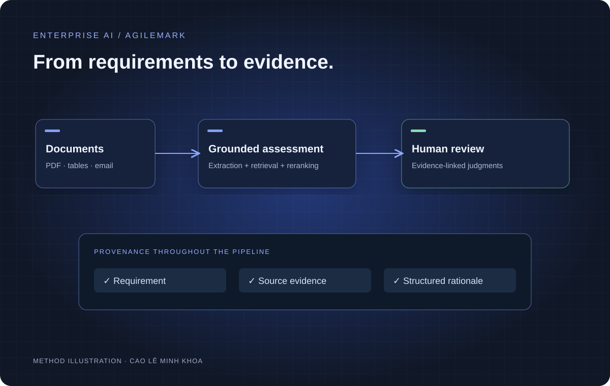
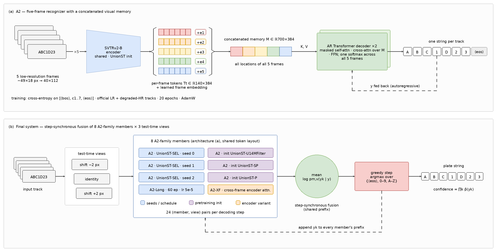

BASED IN HO CHI MINH CITY, VIETNAM
AI ENGINEER & MULTIMODAL RESEARCH
Cao Lê
Minh Khoa.
I’m an AI engineer working across practical systems, vision-language reasoning and efficient inference. I care about how an idea becomes a useful, well-evaluated system.
From evidence-backed AI workflows
to efficient visual intelligence.
Seeing the scene.
Reasoning about the object.
Explore MonoLaDN ↗ABOUT
One practice.
Three connected directions.
I study Computer Science at HCMUT and build AI systems alongside research in multimodal perception and inference efficiency. My work ranges from enterprise applications to experiments on how models see, reason and act.
Full CV ↗CAREER
The journey so far.
Fizo
AI engineering & infrastructure
JUN — AUG 2026EyeCode Tech
VLA inference research
JUL 2026 — PRESENTAgileMark
Enterprise AI systems
Roles overlap in time. The full timeline keeps each role’s dates explicit.
WORK
Choose a direction.
Three channels to explore.
Each connects the projects, methods and outcomes.

01WORK CHANNEL 01↗
AI Systems
Grounded retrieval, evidence-backed workflows and customer-service automation.
AgileMark · Fizo 02
02WORK CHANNEL 02↗
Multimodal Reasoning
Visual-language reasoning for 3D perception and financial documents.
MonoLaDN · ViTNumChart
03WORK CHANNEL 03↗
Vision & Efficient Inference
Low-resolution recognition and efficient Vision-Language-Action inference.
LRLPR · SmolVLACONTACT